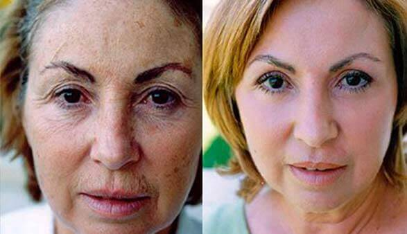

Magyarország
Egészségügyi ellátás
2021
Ennek az incidensnek köszönhetően emberek százezrei értesültek a Magyarországon kifejlesztett új és hatékony bőrfiatalító termékről.
Pál következőképpen nyilatkozott az incidensről:
El sem tudjátok képzelni, mennyire megdöbbentem, amikor megláttam Klári igazi korát. Hiszen nem néz ki 30-nál többnek! Fogalmam sem volt róla, hogy sokkal idősebb nálam. Már egy éve jártunk. Boldog voltam és szerettem őt. De amikor megláttam az útlevelét az esküvőn, annyira megdöbbentem, hogy kiabálni kezdtem vele, aztán elfutottam.
Kétségbe estem, azt se tudtam, mit tegyek. De aztán rájöttem, hogy Klára kora csak egy szám az útlevelében. És még mindig szeretem őt. Ő így is csodálatos és még így is sokkal szebb, mint sok más fiatal lány. Akkor miért ijedtem meg ennyire, ha tulajdonképpen semmi sem változott? Így amikor a kezdeti sokk elmúlt, azonnal elmentem hozzá, hogy beszéljünk. Elmondtam neki, hogy én is megbocsátok neki, és kibékültünk. Összeházasodtunk, elmentünk nászútra, és most babát várunk. Nagyon boldogok vagyunk!Miért, ez így is egyértelmű!
Riporter: Üdvözlünk téged, Klári! Kérlek, meséld el, hogy lehet az, hogy ilyen ilyen fiatalnak nézel ki, és miért titkoltad el az igazi korodat Pali elől?
Sziasztok! Ön elhinné nekem, ha azt mondanám, hogy 64 vagyok? (nevet). Furcsa lenne. Hiszen nem is úgy nézek ki, inkább, mint egy 40 éves, de csak az arcom és a bőröm miatt. És én nem is érzem magam 64 évesnek. Ezért nem akartam elmondani a koromat Palinak, amikor találkoztam vele. Meg nem akartam sokkolni, hiszen olyan jól megvoltunk. Nem a kor a lényeg.
Riporter: Nagyon nehéz elhinni, hogy 64 éves vagy. Egy gyönyörű lányt látok, akit maximum is csak 35-nek tippelnék. Mégis hogyan lehetséges ez? Megosztanál velünk titkos részleteket is?
12 évvel ezelőtt elváltam a volt férjemtől. Akkor voltam 52 éves. Egy fiatalabb nőért hagyott el, mondjuk ki, egy szebb lányért. Szörnyen befordultam, depressziós lettem. Mindez még 2 évig tartott. Az orvosok antidepresszánsokat írtak fel nekem, de még mindig nem tudtam visszaterelni az életem a normális kerékvágásba.
Aztán úgy döntöttem, hogy bebizonyítom magamnak, hogy én is igazi nő vagyok, és hogy bármilyen is legyen a korom, én is lehetek fiatalos és szép.
Az összes pénzemet különböző fiatalító termékekre költöttem, olyan termékeket vásároltam, amelyeket akkoriban a TV-ben reklámozta. De ezek közül egyik sem segített igazán. Aztán alávetettem magam a drága kezelésnek egy kozmetikai klinikák Milánóban. De ez a több alkalomból álló kezelés sem nyújtott látványos eredményt. Aztán rájöttem, hogy nincs annál jobb, mint természetes összetevőket tartalmazó készítményeket használni, és hogy rá kell jönnöm, hogy mi az, ami nálam a leghatékonyabb. 30 éves tapasztalattal rendelkező gyógyszerész vagyok, így nem volt nehéz nagy dolog számomra különböző összetételű természetes készítményeket összekutyulni, itthon elérhető gyógynövényekkel dolgoztam, mindent kipróbáltam magamon.
Riporter: Hát ez nagyon izgalmas, és akkor sikerült megtalálni a tökéletes kombinációt?
Ahogy az arcomon is látszik, igen, sikerült (nevet). Több mint 3 éven keresztül több formulát is kipróbáltam magamon, de egyiknek sem volt jelentős eredménye, vagy nagyon jelentéktelen volt a hatásuk. De nem akartam feladni, és amikor 57 éves lettem, végre sikerült valami hihetetlent alkotnom. Ahogy addig is csináltam, egy új formulát teszteltem magamon, és 7 nappal a formula használatának megkezdése után a barátaim kezdték észrevenni, hogy az arcom változni kezdett. 30 nap után a barátaim és a családom alig ismertek fel!
Képzeld csak el, mész a fodrászodhoz, hogy a szokásos módon vágja le a hajad, és ahelyett, hogy köszönnének neked, ijedt szemekkel néznek rád. Nagyon vicces volt. Csak akkor hitte el a fodrászom, hogy én vagyok az, miután megmutattam neki az útlevelemet. Még mindig emlékszem a ledöbbent arcára, amikor azt mondat: Ez nem lehet igaz, egy hónappal ezelőtt még egy idős nő jött hozzám szomorú szemekkel, most pedig egy fiatal és gyönyörű lányt látok magam előtt, aki csak úgy ragyog a boldogságtól. Ez valami vicc akar lenni?
De nem vicc volt. És akkor rájöttem, hogy sikerült valami hihetetlenül értékeset és szükségeset létrehoznom nem csak magam, de az emberek számára. Ezért több mint egy tucat levelet írtam különböző kutatóközpontoknak és magyar gyógyszeripari cégeknek az általam kifejlesztett készítményről, de akkor értek csak igazán meglepetések.
Riporter: Milyen meglepetések?
Egytől egyig minden vállalat válaszolt nekem, és nagyon nagy összegeket ajánlottak fel a formula megvásárlására. De nagyon meglepődtem, amikor azt mondták nekem, hogy200 euróértfogják forgalmazni a termékemet! Szóval elmagyaráztam nekik, hogy az én formulámhoz az összes összetevőt itthon be lehet szerezni, és pont ezért a készítmény termelése nagyon gazdaságos lenne. Azt mondták, hogy ez már nem az én dolgom, és hogy a termékemet a formula megvásárlása után olyan áron fogják majd árulni, ahogy csak akarják.
Riporter: És erre mit lépett?
Úgy gondoltam, hogy egy ilyen terméknek mindenki számára elérhetőnek kell lennie. Ezért nem voltam hajlandó eladni a formulát, és úgy döntöttem, hogy magam kezdem meg a termelését. Felvettem egy jó nagy kölcsönt a bankban, felbéreltem az ország legjobb gyógyszerészeit, és megindítottam a készítményt termelést. És ez lehetővé tette számunkra, hogy termékünket ne , hanem csak 29 -ért értékesítsük. A termék neve . Nagyon remélem, hogy ilyen alacsony áron, amelyet a termelésünkkel el tudtunk érni, a termékünk elérhető lesz a legtöbb ember számára Magyarországon, és az egyszerű emberek is képesek lesznek megtapasztalni ugyanazt a boldogságot, mint amit én tapasztalhattam meg a múltban. Egy új élet boldogsága, egy új szerelem és az érzés, hogy valakinek még mindig szüksége van rád 64 évesen is. Erre tényleg nagy szüksége van az embereknek.
Riporter: Ez csodálatos! Vállalta a kockázatot, amikor felvette a kölcsönt. Már vissza is fizette?
Sajnos még nem fizettem vissza teljesen, és az előrejelzéseink szerint ilyen alacsony eladási ár mellett még legalább 4 évig kell a törlesztőt. De én kész voltam és vagyok erre az áldozatra, az én célom, hogy a könnyebben hozzáférhető legyen az emberek számára. Végtére is én is csak egy egyszerű nő vagyunk, pont mint a legtöbb ember, aki most olvassa ezt a cikket, és nekem is már volt egy csomó rossz dolog az életemben. Nem számít, mit mondanak, de a megjelenés, a külső minden nő számára a boldogság szerves része. Ezért a kor előrehaladtával mindent meg kell tennünk azért, hogy megőrizzük az ősi szépségünket. És ha már sikerült létrehozni egy ilyen szuper terméket, akkor szeretném, ha az mindenki számára elérhető lenne. A megfiatalítja a bőrt, és úgy fog kinézni, mint 20-30 éves korában, és ehhez mindössze 30 napra van szüksége.Én 64 éves vagyok, és nagyon boldog életet élek, van egy fiatal és gyönyörű férjem, és már 3 hónapos terhes vagyok, nagyon várjuk a közös babánkat. Szóval, azt kívánom minden nőnek, hogy ne essen kétségbe, és mindig harcoljon a boldogságáért.
Készítettünk egy interjút egy bőrgyógyász professzorral is, az Európai Bőrgyógyászati és Kozmetológiai Központ egy fontos szakemberével, Marosi Alberttel. Ő így nyilatkozott erről a helyzetről.
Az a tény, hogy Klárának sikerült létrehoznia egy valóban egyedülálló bőrfiatalító formulát, ami korábban szinte elképzelhetetlen volt számunkra. Ebben az esetben pontosan kiválasztott természetes összetevőkről és azok helyes kombinációjáról beszélünk. Több természetes összetevőt kombinálva sikerült létrehoznia a jelenleg egyik leghatékonyabb arc- és bőrfiatalító terméket, amely ma már nem csak Magyarországon, de az egész világon elérhető.
Amikor kerestünk tényleg nem tudtuk elhinni, hogy ez lehetséges. De a végső klinikai vizsgálatok elvégzése után egyszerűen megdöbbentünk az eredményeken! A valóban működik, és mindössze 3-4 hét alatt helyreállíthatja a bőr fiatalságát! És ami a legfontosabb, természetes összetevőkből áll, és teljesen ártalmatlan, ellentétben a legtöbb európai piacon forgalmazott termékkel. A rendelkezik minden megfelelőségi tanúsítvánnyal, és gyártási munkái teljes sebességgel zajlnak.
A botrányos történet egy 32 éves férfi menekül a házassága elterjedt egész Olaszországban. Sokan elítélték Pault. De nézd, hogy végződött ez a dolog. Visszament a szerelméhez, összeházasodtak, és most boldogok. És a képlet, amit Klára létrehozott, több ezer nagyszerű véleményt kapott a világ minden tájáról. Ennek az anti-aging terméknek a hatékonysága minden rekordot megdöntött, és ugyanakkor saját termelésének köszönhetően többszörösen olcsóbb, mint a piacon népszerűsített márkák termékei.
De még mindig megértjük, hogy még 29 elég magas ár lehet néhány olasz számára. Ezért kértük Chiara-t, hogy csökkentse az árat még jobban, amennyire csak lehetséges. A banki kölcsöne ellenére beleegyezett.
Csak korlátozott ideig érhető el a , 50% kedvezménnyel . Speciális ár . Ebben az időszakban bármelyik magyar lakos megkaphatja a . Ehhez egyszerűen csak hagyja meg a nevét és a telefonszámát az alábbi űrlapon. Ezt követően egy tanácsadó felveszi Önnel a kapcsolatot, és minden kérdésére válaszol a készítménnyel kapcsolatban.
Egy nagyon megható és ugyanakkor vicces történet. Ismét beigazolódott, hogy ha egy embernek van elég akaratereje és tényleg akar valamit, akkor bármire képes. Egy forradalmian új termék létrehozása is lehetséges, amely megváltoztatja az egész világot.
A nagymamám is használta a készítményt. És ez valami sokkoló!!! Most fiatalabbnak néz ki, mint az anyám! Nézzétek csak meg a képeket!
Успела заказать! Большое спасибо. Мой муж тоже бросил меня ради более молодой девушки. Надеюсь, будет мне полезен. Даже если муж захочет обратно, я не возьму его. Я просто хочу, чтобы понял, что он потерял!
Elkezdtem használni a készítményt, de még csak 9 nap telt el. Nagyon mély ráncaim vannak, és látom, ahogy kezdenek halványodni. Ez egy igazi csoda! És észrevettem még valami érdekeset... az arcom egy kicsit lógott, de most már határozottabb a kontúrok és mintha sokkal feszesebb lenne a bőröm. És a táskák a szemem alatt is teljesen eltűntek. 10 évvel fiatalabbnak nézek ki. Köszönöm!
Íme az eredményeim a készítménnyel. Jó,mi?

Anna, ez tényleg te vagy? Megrendelem én is, amíg 50%-os kedvezmény van rá!
Elleneztem a . használatát a feleségemnek, ő még most is gyönyörű, mindig is az volt, és úgy szeretem, ahogy van. De most kiderült, hogy ő is használja már 2 hónapja ezt a terméket, és ez idő alatt még gyönyörűbb lett, újra beleszerettem! Nehéz szavakba önteni, de az érzéseim iránta még erősebbek, és a szenvedély köztünk újra fellángolt. Nem is gondoltam, hogy ilyen lehetséges. Most annyira boldog vagyok, hogy ragaszkodott hozzá, hogy használja ezt a terméket és nem hallgatott rám és megvette a
Nekem is meg kell rendelnem ezt, amíg még van kedvezmény, mert ha elkezdik 200 euróért árulni, azt nem tudom megfizetni. Miután az emberek már biztosak a csodálatos eredményekben, simán felemelhetik az árat, úgy is mindenki megveszi.